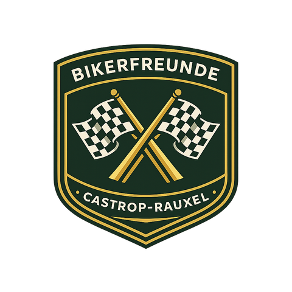

Vorschlag · Online-Präsenz
Gefunden werden bei Google und in KI-Suchmaschinen. Und daraus neue Mitfahrer gewinnen.

Das Ziel
Wer in der Region eine Motorradgruppe oder schöne Touren sucht, soll die Bikerfreunde finden – bei Google genauso wie bei einer Frage an eine KI. Und daraus sollen neue Mitfahrer werden.
Eine KI etwas zu fragen heißt nicht, „KI einzusetzen". Es heißt einfach, überall sichtbar zu sein, wo Menschen heute suchen: bei Google und bei ChatGPT, Gemini & Co. Nichts wird automatisch gemacht – du gibst alles frei.
Die Ausgangslage
Der Club hat seit 1999 unzählige Touren und einzigartige Inhalte. Die aktuelle Seite taucht bei Google aber kaum auf und ist für KI-Suchmaschinen praktisch unsichtbar.
Das Ergebnis: Menschen, die genau so etwas suchen, finden die Bikerfreunde heute nicht.
Die Chance
Die meisten Motorradclubs in Deutschland sind bei Google schwach und bei KI gar nicht präsent. Genau da liegt die Chance.
| Suchbegriff | Schwierigkeit |
|---|---|
| Motorradgruppe Castrop-Rauxel | Sehr gering |
| Motorradgruppe / Stammtisch Ruhrgebiet | Gering |
| KI: „Motorradgruppe im Ruhrgebiet?" | Gering |
| Schönste Motorradstrecken Sauerland | Mittel |
| Motorradtouren Sauerland / NRW | Hoch |
Der Grundgedanke: Für jedes Wort, das jemand eingibt, soll eure Seite erscheinen.
Die Lösung
Eine moderne, aber klare Website. Dazu regelmäßige Inhalte, optimiert für Google und für KI. Ein funktionierendes Beispiel gibt es bereits.
Schritt 1 · Das Design
Bevor wir mit Inhalten starten, bekommst du mehrere Design-Vorschläge und siehst, wie die Seite aussehen könnte: Farben, Stil und Aufbau. Du kannst alles ändern lassen, so oft du möchtest.
Erst wenn dir das Design gefällt und du es freigibst, geht es weiter mit den Inhalten. Zwei Beispiele hast du bereits gesehen.
Schritt 2 · Die Inhalte
Was dabei herauskommt
Investition
Keine Mindestlaufzeit. Jederzeit kündbar.
Für Fragen bin ich jederzeit da.